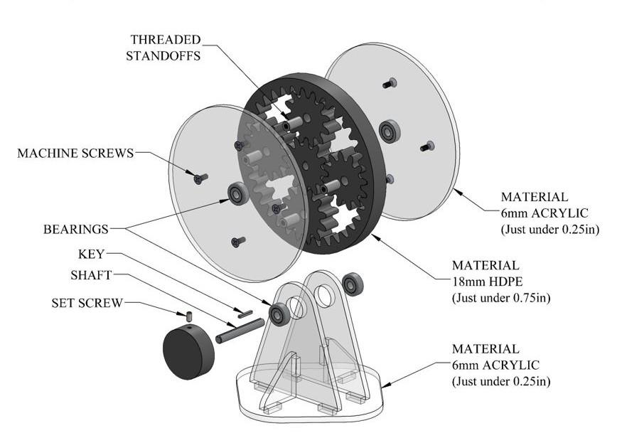
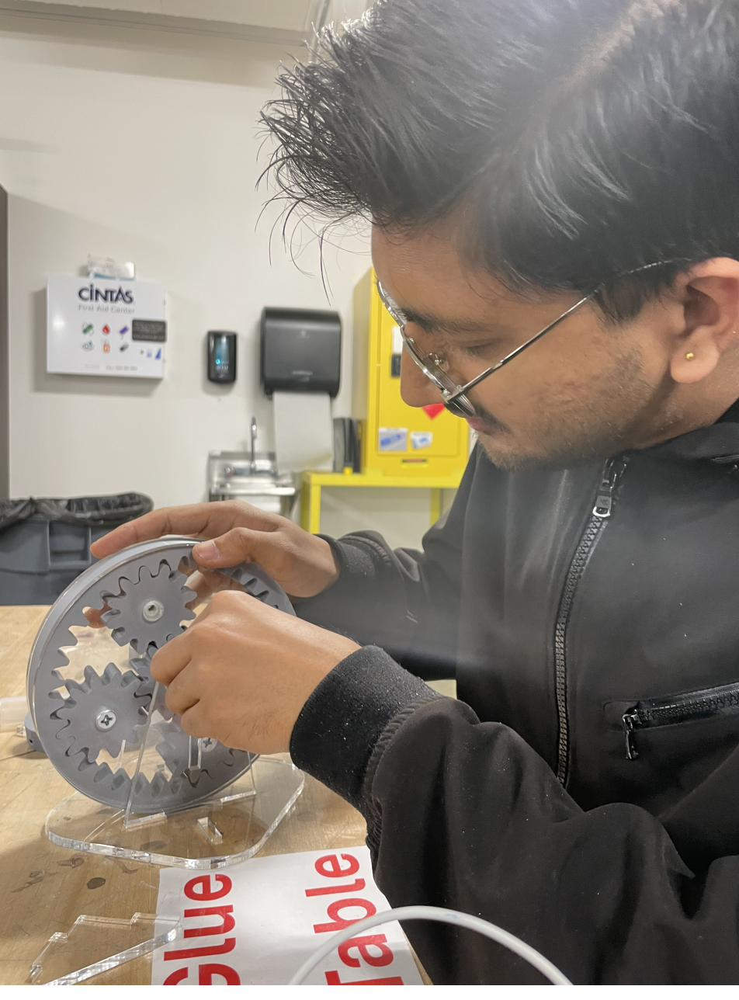

CAD · Fabrication
Planetary Gear System
A complete SolidWorks design and physical build of a 4:1 planetary gearbox — from individual part models to a working assembly and exploded-view drawing.



Key Specs
- Gear ratio: 4:1 reduction (ring fixed, sun input, carrier output)
- Tooth counts: 12T sun · 12T planets · 36T ring
- Materials: PETG gears (3D printed) · laser-cut acrylic housing
- Assembly: 12 parts plus shaft, keys, and fasteners
- Deliverable: working assembly · exploded-view drawing · bill of materials
Overview
I designed every component of a planetary gearbox in SolidWorks, assembled them into a working model, and produced formal engineering documentation. The final deliverable was a hand-cranked physical assembly plus an exploded-view drawing with a bill of materials. With the ring gear fixed, a 12-tooth sun gear drives the carrier through 12-tooth planets meshing inside a 36-tooth ring — a clean 4:1 reduction.
Problem
Planetary systems pack high-torque reduction into a compact, coaxial package — but the geometry is unforgiving. The sun, planets, ring, and carrier all share one tooth module, so every mesh has to stay geometrically consistent or the gears bind. The real challenge was making sure a design that worked on screen could actually be built and turned by hand.
Process
I modeled each component individually in SolidWorks, then mated them into an assembly reflecting the real relationships between sun, planets, ring, and carrier. The exploded view and bill of materials came straight from the assembly file. I 3D printed the gears in PETG for strength and durability and laser-cut the acrylic housing — 12 printed and cut parts in total, plus the shaft, keys, and fasteners. The physical build tested whether the tolerances held: I checked fit and mesh by cranking the carrier and watching for binding.
What I learned
A planetary system only works if the gear geometry stays consistent across every mating part, so the modeling has to be disciplined from the first sketch. The build also forced one real fix — my original screw holes left the heads sticking out, so I redesigned them with the right chamfer to sit flush. It's a small change, but it's the kind of detail that only surfaces once a model becomes a physical part. That's exactly the gap coursework alone doesn't teach.